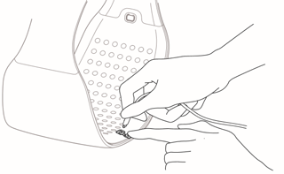
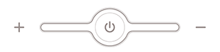

| Components |
| ① LumiDiet |
| ② USB Magnetic Charging Cable |
| ③ Pouch |
| ④ Quick Guide |
 |
| Working frequency : 2.402 ~ 2.480 GHz Rated power consumption : 4W(3.3V 1200mAh) Input Voltage(S model) : 5V 1A DC Input Voltage(S+ model) : 5V 2A DC Product size/Weight : Medium258.4X179X110.5(mm)/460g, Large258.8X218X110.5(mm)/480g |
| STEP1 |
 |
| 1.1 Charge (S+ model) |
| You may connect a charging cable included in the box to the magnetic charging port located on front part of the device. The magnetic charging cable socket has +/- magnetic force, so you can connect it to the device as it is shown in the picture below. If you fail to connect, please try again after switching the direction 180 degrees. It takes up to three hours to fully charge. |
| The charging time may differ depending on output of the charger. |
|  |
| 1.2 Charge (S model) |
| Please charge your device after receiving the product before use. Open up the cap and plug in USB charging cable. (You may use micro 5-pin USB cable or Android charging cable to charge.) It takes up to three hours to fully charge. |
| The charging time may differ depending on output of the charger. |
 |
| 2. Check Charging Status | |
| - | While Charging : The power button will slowly blink every two seconds. Fully Charged : Once charging is complete, the power button will quickly blink three times repetitively. Then, you may unplug the charging cable and start using LumiDiet. |
| - | With the fully charged battery, the device will last for about 5 sessions (1 Session = 30 minutes.) |
| - | The device will automatically turn off after 30 minutes (The device will vibrate when it turns off). |
| - | When battery level drops below 30%, power button will blink in red. Please charge your device when the light starts to blink. |